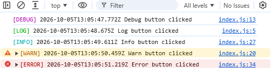
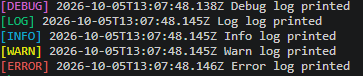

Simple and Colorful Logger Library
Logger library for colorful and simple logging in JavaScript applications. It also adds timestamps to each log message.
Installation
You can install the logger library using npm:
npm install @yigithsyn/logger
Usage
Vanilla JavaScript
<script src="https://unpkg.com/@yigithsyn/logger"></script>
<script>
console.debug('This is a debug message');
console.log('This is a log message');
console.info('This is an info message');
console.warn('This is a warning message');
console.error('This is an error message');
</script>
CommonJS
require('@yigithsyn/logger');
console.debug('This is a debug message');
console.log('This is a log message');
console.info('This is an info message');
console.warn('This is a warning message');
console.error('This is an error message');
ES Modules
import '@yigithsyn/logger';
console.debug('This is a debug message');
console.log('This is a log message');
console.info('This is an info message');
console.warn('This is a warning message');
console.error('This is an error message');
Output Format
HTML Console:

Terminal Console:

License
This project is licensed under the BSD License.